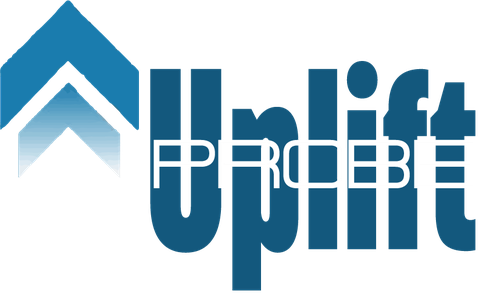
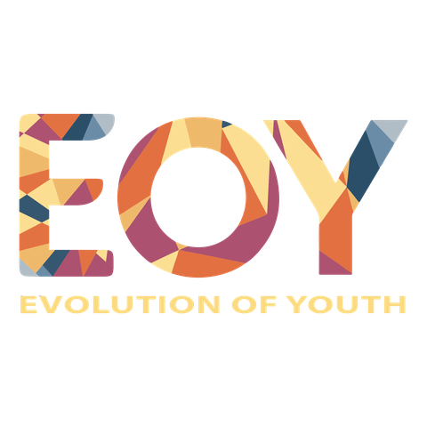
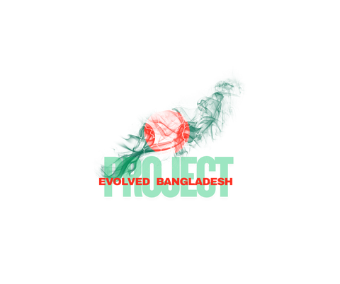
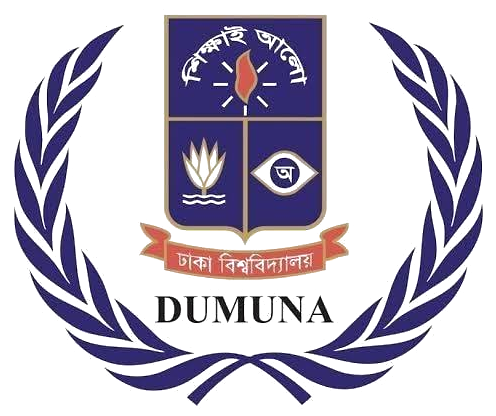
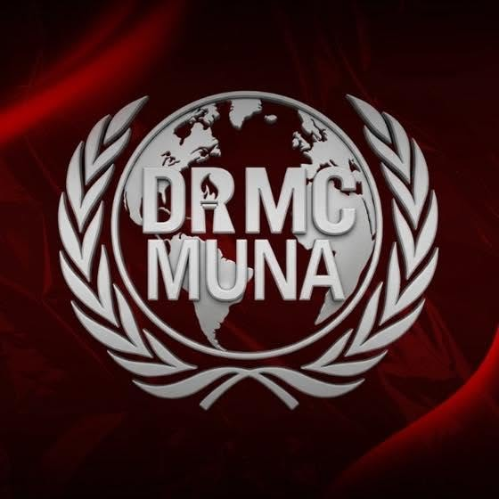
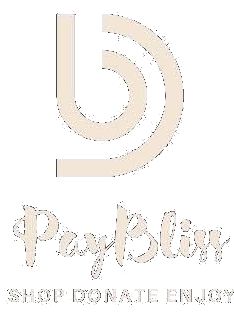
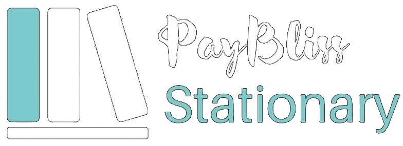

Leadership & Outreach
Beyond the lab
Organisation-building, teaching, and international engagement that run alongside the research.
Leadership & organisational experience
Jun 2025 – Present

Founder & Executive Director
Uplift Probe, Dhaka
- Founded a research-driven academic institution and currently coordinate work on several review papers.
- Represented the institution in Nepal and developed academic connections for future collaboration.
- Signed a six-month MOU with FECAM, Kathmandu University, and co-hosted a World Environment Day 2025 webinar.
- Guides 10 Research Associates and 8 Organisers.
Jan 2021 – Present

Founder & President
Evolution of Youth, Dhaka
- Founded a youth platform focused on skill development, creativity, and support for people living below the poverty line.
- Led 13 successful events and social service initiatives, including high-reach campaigns and crisis-response fundraising.
- Built domestic and international networks, including connections in Europe, to support funding and outreach.
- Represented the organisation in radio and talk-show discussions to motivate youth engagement.
Apr 2021 – Present

Founder
Project Evolved Bangladesh, Dhaka
- Founded a social initiative advocating for the rights and well-being of people living below the poverty line.
- Led research activities and charity events aligned with poverty alleviation and community support.
- Linked social entrepreneurship initiatives with charitable funding for organisational activities.
Apr 2023 – Present

Deputy Director, Team Strategic Outreach
Dhaka University National Model United Nations Association (DUNMUNA)
- Contributed to DUNMUN 2023 and DUNMUN 2024, among Southeast Asia's largest MUN conferences.
- Served as Conference Officer for DUNMUN 2023 and Deputy Director for Strategic Outreach at DUNMUN 2024.
- Collaborated with senior officials from Bangladesh and abroad and contributed to academic programming.
Jan 2019 – Jun 2022

Founder; Secretary of Marketing & Finance
Dhaka Residential Model College Model United Nations Association (DRMCMUNA)
- Founded and introduced Model United Nations activities to students, training participants in delegate skills and UN procedures.
- Organised DRMCMUN 2022, the first Model United Nations conference at Dhaka Residential Model College.
- Hosted multiple mock MUNs, including a national mock MUN with delegates from across Bangladesh.
Teaching experience
Jan 2022 – Jun 2025
Spoken English Instructor
SHAFIN'S, Dhaka
- Taught spoken English and grammar to diverse student groups across multiple batches.
- Taught more than 2,000 students and supported 500+ students in preparing for and passing the A1 exam.
Jun 2025 – Present
Founder
WellSpoken, Dhaka
- Founded an English language coaching platform offering personalised instruction for beginners and advanced learners.
- Draws on 3.5 years of teaching experience to offer tailored lessons for students in Bangladesh and abroad.
Social entrepreneurship

PayBliss
Founder & CEO · Apr 2022 – Present
An online clothing shop directing a portion of profits to the well-being fund of Project Evolved Bangladesh.

PayBliss Stationery
Founder & CEO · Apr 2022 – Present
An online stationery platform focused on affordable, accessible items, with revenue directed toward Project Evolved Bangladesh's charity initiatives.
Conferences & international engagement
2026
International Delegate
HISA Youth Dialogue 2026, Headway Institute of Strategic Alliance — Sydney, Australia
- Represented youth interests in global dialogue on community-led development and environmental governance.
- Networked with international researchers and policymakers to connect grassroots research with global policy frameworks.
- Facilitated collaborative sessions on innovation, leadership, and regional challenges in climate-vulnerable nations.
2025
Presenter & Best Paper Awardee — Student Category
4th International Conference on Water and Environmental Engineering (iCWEE-2025), Western Sydney University — Sydney, Australia
- Presented "Assessing the Potentiality of Rainwater Harvesting System as a Source of Drinking Water in the Coastal Regions of Bangladesh."
- Focused on safe and sustainable drinking-water alternatives for climate-vulnerable coastal communities in Bangladesh.
2025
Partial Scholarship Awardee
International Youth Research Camp, Nepal
- Participated in collaborative learning sessions at Kathmandu University, Pokhara University, Pokhara Research Institute, and the Bangladesh Embassy in Nepal.
- Exchanged research ideas with professors, students, and researchers and explored future research collaboration.
- Initiated a six-month MOU with the Forum for Environmental Conservation and Management (FECAM), Kathmandu University.
Honors & awards
- Best Paper Award — Student Category, 4th International Conference on Water and Environmental Engineering (iCWEE-2025), Western Sydney University, Australia2025
- 2nd Prize, Climate Olympiad, Youth Messenger Bangladesh — national-level competition on climate science awareness and problem-solving2025
- 2nd Prize, Environmental Olympiad, Youth Messenger Bangladesh — national-level competition on environmental sustainability and conservation2025
- Finisher, Nepal–Bangladesh Friendship Run, Pokhara — Bangladesh Research Society2025
- Outstanding Correspondent Award, representing BBC in the International Press Committee — NSTU Model United Nations Association2024
- Special Mention Award, representing China in UNHRC — Dhaka University Model United Nations Association2023
- Entrepreneur Award, Artsy Overlap 2021 — Remians Art Club2021
- Entrepreneur Award, 4th DRMC International Tech Expo2021
- 3rd Position, "Amar Vabnay Amar Desh" — DRMC Social Service Club2021